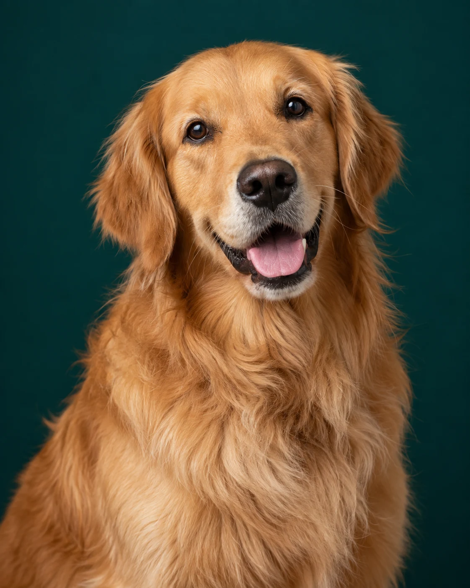
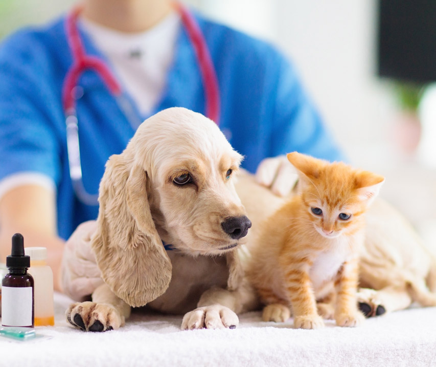

Dr. Dániel Levente
Medic veterinar · MDV
Ei ne oferă totul, fără cuvinte.
Noi le oferim grija pe care o
merită.
Oameni dedicați.
O singură pasiune: binele lor.

Știm că, pentru tine, nu e „doar un animal”.
E familie. Și
așa îl primim și noi.
Din 2007, cabinetul Kerberos aduce împreună experiența medicală, aparatura modernă și atenția pentru fiecare pacient. De la prima consultație la intervenții complexe, suntem aici pentru sănătatea companionului tău.
Cunoaște oamenii din spatele grijii
De la prevenție la recuperare,
găsim împreună următorul pas.
Consultații, diagnostic și tratament, alături de programe de vaccinare și deparazitare adaptate animalului tău. Discutăm și despre nutriție și îngrijirea de zi cu zi.
Programează o consultațieIntervenții chirurgicale și ortopedice pentru animalele de companie, cu anestezie asistată și aparatură modernă. Echipa îți explică pașii intervenției și îngrijirea necesară după operație.
Discută cu echipaIgienă dentară pentru câini și pisici, detartraj cu ultrasunete, extracții și tratamente pentru afecțiunile gingiilor. Începem cu o evaluare a sănătății orale.
Programează o evaluarePentru o situație urgentă, sună echipa înainte de a porni spre cabinet. Oferim asistență pentru urgențe și terapie intensivă cu internare, în funcție de evaluarea medicală.
Sună: 0757 541 120Oferim îngrijire și sfaturi pentru animalele exotice. Dacă nu te poți deplasa cu animalul la cabinet, contactează-ne pentru a discuta posibilitatea unei vizite la domiciliu.
Află cum te putem ajuta
Facem parte din comunitate. Și ne implicăm: în îngrijirea animalelor sălbatice, în educația celor mici și în formarea viitorilor medici veterinari.
Descoperă proiectele noastre
Sună-ne pentru o programare sau o întrebare.
Suntem aici
pentru voi.